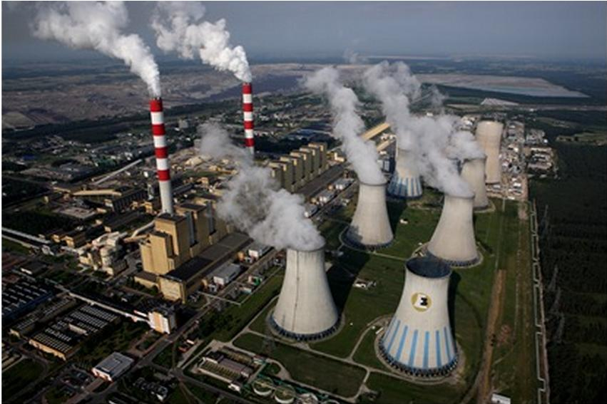
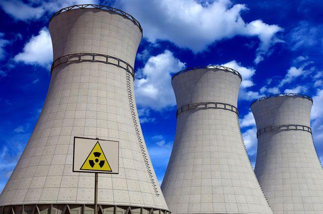
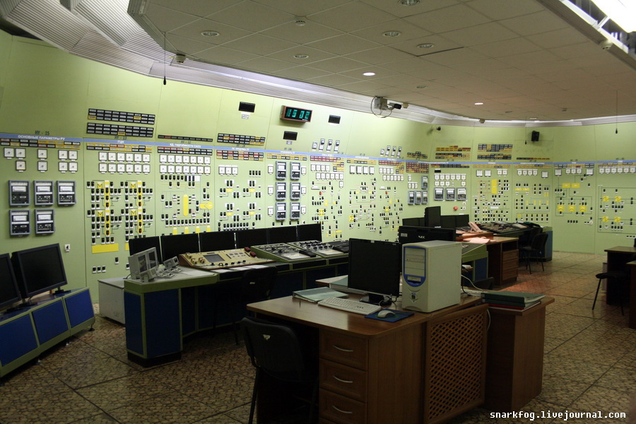

Тепловые электрические станции
В процессе обучения студенты получают теоретическую подготовку по фундаментальным дисциплинам, приобретают необходимые знания для расчета и проектирования основного и вспомогательного оборудования тепловых электростанций (ТЭС), компьютерного моделирования, конструирования и расчетов котлов, паровых и газовых турбин, теплообменных аппаратов, водоподготовительных установок, систем автоматизированного управления и автоматического регулирования, управления режимами работы оборудования с учетом экономических и экологических факторов.

Проектирование и экплуатация АЭС
Набор на эту специальность осуществляется с 2020 г. С 2008 года специальность называлась "Паротурбинные установки атомных электрических станций" по одной группе дневного обучения. В процессе обучения студенты получают глубокую теоретическую подготовку по фундаментальным дисциплинам и приобретают необходимые знания по всей технологической схеме производства электрической энергии на АЭС. В последующем студенты глубоко изучают оборудование паротурбинных установок (II контур при установке на АЭС реакторов типа ВВЭР) и низкопотенциальной части. Студенты получают базовые знания по ядерной физике, работе ядерных энергетических реакторов, радиационной безопасности и обращению с радиоактивными отходами АЭС.

Автоматизация и управление теплоэнергетическими процессами
Студенты глубоко изучают теплоэнергетические дисциплины, связанные с работой основного и вспомогательного оборудования тепловых электрических станций как объектов управления, теорию автоматического управления, методы и средства измерения, а также технические средства автоматизации, включая информационные и управляющие комплексы.